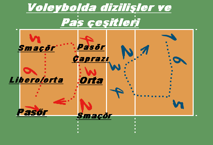

- Pasör (Setter)
- Hücum organizasyonunu kurar.
- Topu hücum oyuncularına “pas” olarak iletir.
- Oyunun beynidir.
- Voleyboldaki “oyun kurucu”dur.
- Pasör Çaprazı (Opposite / Sağ Hücumcu)
- Pasörün çaprazında yer alır.
- En çok hücum yapan oyunculardan biridir.
- Blok ve hücumda etkilidir.
- Genellikle arka alandan da güçlü hücumlar yapar.
- Smaçör (Kenar Hücumcu / Dış Smaçör)
- File önünde, 3 numarada oynar.
- Ana görevi blok yapmak ve kısa paslarla hızlı hücumdur.
- Reaksiyonları hızlı ve çevik olmalıdır.
- Libero
- Arka alanda oynayan savunma uzmanıdır.
- Servis atamaz, hücum yapamaz, file önünde pas veremez.
- Farklı renk forma giyer.
- En çok top karşılayan ve savunma yapan oyuncudur.
